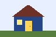

Lesson 7 of 10 · about 5 minutes
Lesson 7: Small screens
Goal: Make images shrink and change a two-column page into one column on a narrow screen.
A responsive page adapts to the available space. Someone can read the same content on a phone, in a narrow browser window or with enlarged text.
1. Tell the browser to use the device width
Include this line in the <head> of each HTML page. It helps mobile browsers lay out the page at the device's width.
<meta name="viewport" content="width=device-width, initial-scale=1">2. Let images shrink
img {
max-width: 100%;
height: auto;
}max-width: 100% keeps an image within its container. height: auto preserves its proportions. A smaller original image stays small.

This small PNG stays inside its example box.
3. Stack the columns when space is tight
This site uses a floated directory and a left margin on the lesson. A media query applies a different rule when a condition is true. Put this after the usual layout rules in your CSS.
/* Usual layout for a wider window. */
.sidebar {
float: left;
width: 24%;
}
.lesson {
margin-left: 28%;
}
/* Narrow window: stack the same content. */
@media (max-width: 760px) {
.sidebar {
float: none;
width: auto;
}
.lesson {
margin-left: 0;
}
}At a window width of 760px or less, the directory sits above the lesson. The content and reading order stay the same. This is the same layout change used on these pages.
Try it
- Look at this tutorial in a wide browser window.
- Make the window narrower than 760px. The directory should move above the lesson.
- Use browser zoom at 200% and read the text again. Long code examples may scroll inside their own boxes.
Check: The page has one column on a small screen, images keep their proportions and text is not cut off.
Common mistake
If you remove the float but leave the lesson's old left margin, an empty gap remains. Reset both layout rules. Avoid a fixed page width such as width: 1000px; a max-width can set a limit while still allowing the page to shrink.
Next, check whether people can use your page with a keyboard and clear labels.
Check your understanding
Why does the narrow-screen rule use float: none and margin-left: 0 together?
Show the answer
Removing the float stacks the sidebar above the lesson. Resetting the lesson margin removes the empty space previously reserved for that sidebar.